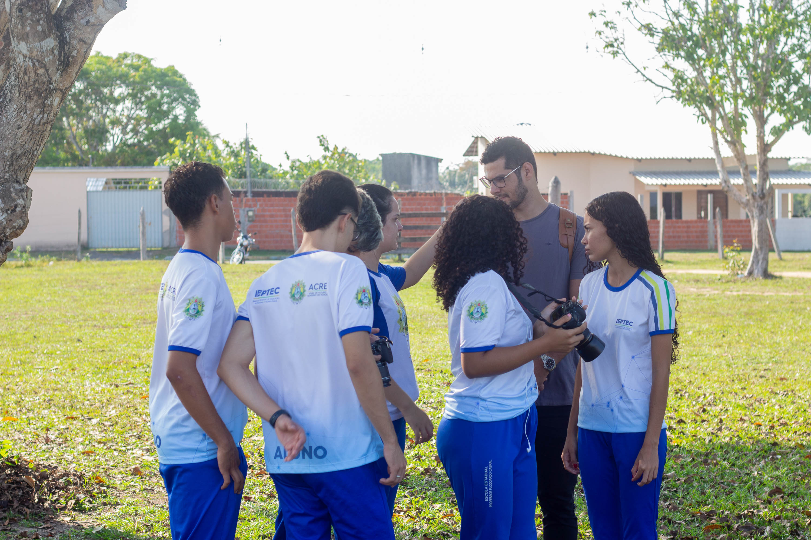

Fotografia
Sobre o curso:

Em um curso de fotografia o profissional aprenderá conceitos artísticos e técnicos sobre a composição e estética de cenários. Conhecimentos como enquadramento, regra dos terços, objetos de interesse, paleta de cores etc serão abordados pelos professores.
O que se aprende neste curso?
Em um curso de fotografia, os alunos aprendem uma variedade de habilidades e conhecimentos relacionados à arte e à técnica da fotografia. Embora o conteúdo possa variar de acordo com o nível de especialização e a duração do curso, aqui estão alguns tópicos comuns que são abordados em cursos de fotografia:
• Fotografia Básica: Noções introdutórias sobre câmeras, tipos de câmeras, lentes e como elas funcionam.
• Técnicas de Exposição: Compreensão da abertura do diafragma, velocidade do obturador e sensibilidade ISO para controlar a exposição da imagem.
• Composição Fotográfica: Princípios de composição, como regra dos terços, linhas de orientação, equilíbrio e perspectiva.
• Iluminação: Técnicas para usar a luz natural e artificial de maneira eficaz na fotografia.
• Retratos: Fotografia de retratos, incluindo pose, iluminação e direção de modelos.
• Fotografia de Paisagem: Técnicas para capturar paisagens naturais e urbanas.
• Fotografia de Eventos: Cobertura de eventos, como casamentos, festas e esportes.
• Fotografia de Produto: Fotografia de produtos para fins comerciais ou de marketing.
• Edição de Imagens: Uso de software de edição de fotos, como Adobe Photoshop ou Lightroom, para aprimorar e retocar imagens.
• História da Fotografia: Estudo da evolução da fotografia e de fotógrafos famosos.
• Equipamento Fotográfico: Conhecimento sobre tipos de câmeras, lentes, tripés e acessórios.
• Fotografia Digital: Uso de câmeras digitais e técnicas específicas para a fotografia digital.
• Fotografia de Estúdio: Técnicas de iluminação e configurações de estúdio para fotografia controlada.
• Projeto Fotográfico: Desenvolvimento de projetos pessoais ou temáticos que envolvem a criação de uma série de imagens.
• Ética Fotográfica: Questões relacionadas à ética e direitos autorais na fotografia.
Os cursos de fotografia podem ser oferecidos em diferentes níveis, desde cursos introdutórios para iniciantes até programas avançados para fotógrafos experientes. Eles podem ser encontrados em escolas de arte, universidades, institutos de fotografia especializados e até mesmo online. O objetivo desses cursos é capacitar os alunos a capturar imagens de alta qualidade e a desenvolver uma compreensão sólida da linguagem visual da fotografia.